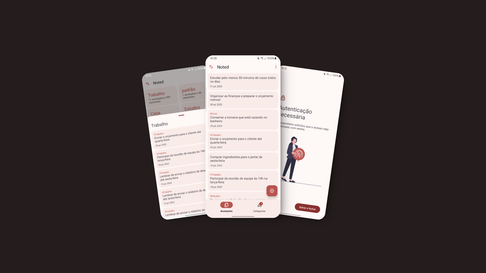

Noted é o aplicativo de anotações perfeito para criar, editar e gerenciar suas notas. Utilize tags para categorizar e agrupar suas anotações de forma eficiente. Simplifique sua vida com Noted!
Noted oferece a opção de ativar a , garantindo que suas anotações privadas permaneçam seguras e acessíveis apenas a você.
Organize suas ideias, tarefas e lembretes com Noted, o aplicativo de anotações definitivo que combina simplicidade e segurança. Com Noted, você pode criar, editar, visualizar e excluir anotações de forma intuitiva e eficiente. Categorize suas anotações com tags personalizáveis para facilitar a busca e a organização. Agrupe suas anotações por tags para uma visualização mais estruturada e acessível.
Além disso, Noted oferece a opção de ativar a autenticação biométrica, garantindo que suas anotações privadas permaneçam seguras e acessíveis apenas a você. Ideal para profissionais, estudantes e qualquer pessoa que precise manter suas anotações organizadas e protegidas.
Experimente Noted e transforme a maneira como você gerencia suas informações diárias!